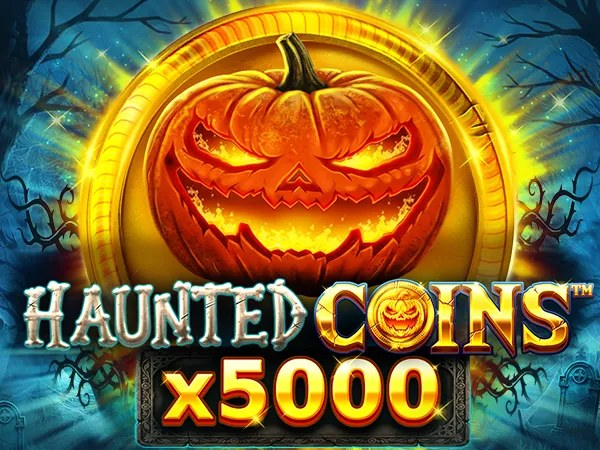

Haunted Coins x5000 - RTP, Review & Where to Play

| Provider | Wazdan |
|---|---|
| Game type | Video slot |
| Theme | Horror |
| Released | 15 October 2026 |
| Layout | 9 independent reels, no paylines |
| RTP | 96.15% (see FAQ) |
| Volatility | Very High |
| Max win | 5,000x |
| Mobile | Yes |
Overview
Haunted Coins x5000 takes the Coins series after dark. A midnight setting wraps the familiar 9-reel grid in eerie visuals, while the gameplay stays built around accumulation: coins land, values build, and the bonus round does the heavy lifting.
The Hold the Jackpot bonus is the centerpiece. Three respins reset with every new symbol, and filling all 9 positions awards the 5,000x Grand Jackpot. Cash Infinity symbols land sticky in the base game with values between 5x and 10x, then pay out during the final reveal of the bonus round.
Two extras shape the session. The Cash Out label accumulates symbol values in the base game and pays a percentage when its countdown ends after up to 20 spins. Chance Level lets you multiply the bet by up to 10x to raise the odds of entering the bonus round.
Where to Play Haunted Coins x5000
Haunted Coins x5000 is available at online casinos that carry Wazdan games. Start with our reviewed toplists:
Haunted Coins x5000 FAQ
What is the RTP of Haunted Coins x5000?
Wazdan lists Haunted Coins x5000 with an RTP of 96.15% on the official game page. To confirm the exact figure at your casino, open the game info or paytable inside the game where you play.
Can I play Haunted Coins x5000 for free?
Many online casinos let you try Haunted Coins x5000 in demo mode without depositing. Pick a casino from our toplists and look for a demo or free play option if you want to test the game first.
Where can I play Haunted Coins x5000 for real money?
Haunted Coins x5000 is available at casinos that carry Wazdan games. Our toplists cover Nigeria, Brazil, Mexico, Kenya, South Africa and Colombia, and only include operators we reviewed.
Does Haunted Coins x5000 work on mobile?
Yes. Like all Wazdan releases, Haunted Coins x5000 runs in the browser on phones and tablets, with no download needed.